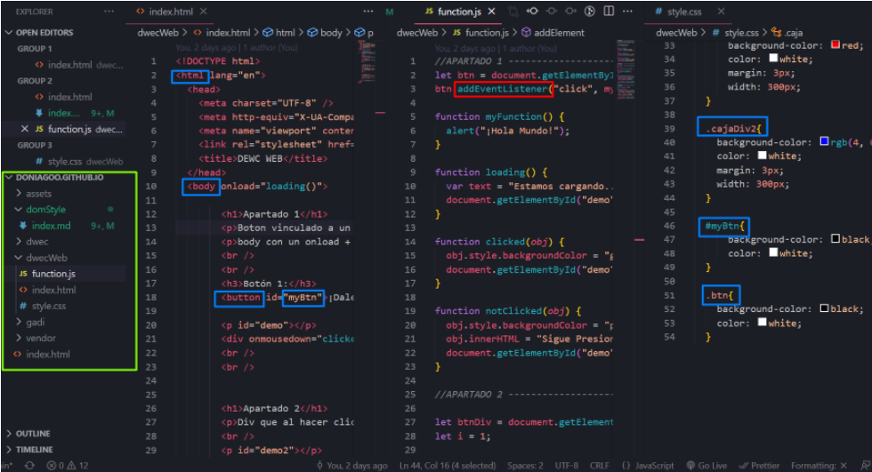

Que es el DOM?
DOM o tambien conocido como Document Object Model es esencialmente un modelo computacional a través del cual los programas y scripts pueden acceder y modificar
dinámicamente el contenido, estructura y estilo de los documentos HTML y XML.
Dentro de DOM hay varios apartados entre ellos: DOM Style, DOM Element, DOM Document, DOM Events.
Hoy vamos a explicar DOM Document.
DOM Document
Cuando un documento HTML se carga en un navegador web, se convierte en un objeto de documento. Este objeto de documento es el nodo raiz del documento HTML y tambien es una propiedad del objeto de ventana. Para acceder a el se accede con "window.document" o con "document"

Funciones
Métodos de búsqueda
- getElementById: Busca por id
- getElementsByName: Busca por el name value
- getElementsByTagName: Busca por el nombre del tag
- getElementsByClassName: Busca por clase
- querySelector: Busca por selector CSS
- querySelectorAll: Busca todos los selectores CSS
Properties
- attributes: Nos devuelve todos los atributos que un elemento tenga, pudiendo cambiar cada uno de ellos.
- className: Devuelve el nombre de la clase del elemento seleccionado.
- innerHTML: Con innerHTML podemos ver y cambiar el contenido del texto del elemento.
- outerHTML: Nos devuelve no solo el texto si no los tags que lo envuelvan.
- textContent: Similar a innerHTML pero devuelve el contenido de texto del elemento seleccionado y sus descendientes.
- style: Nos devuelve el estilo del elemento y nos permite modificar el estilado del mismo.
Métodos de búsqueda
- onClick: Cuando clickeamos el elemento
- resize: BuCuando resizeamos la página
- onmouseover: Cuando pasamos el puntero por encima del elemento
- onmouseout: Cuando sacamos el puntero de encima
Demostracion DOM
Aqui hay una pequeña demostracion de lo que se puede hacer con DOM
